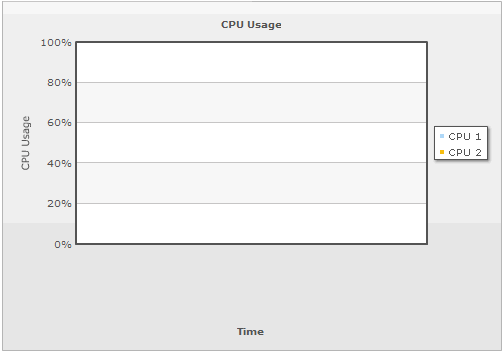
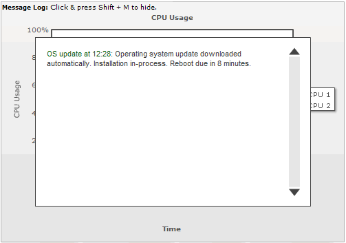

Message Logger > Setting it up |
||||||||||||||||||||||||||||||
To use message logger, you first need to make sure that you're using a real-time chart from FusionWidgets suite - i.e., charts which upate themselves in real-time. Examples are real-time line chart, column chart, angular gauge, linear gauges etc. Thereafter, there are 2 steps involved in configuring and using the message logger:
We'll discuss both of these in details here. |
||||||||||||||||||||||||||||||
| Setting up the message logger - XML Attributes | ||||||||||||||||||||||||||||||
To use the message logger in a real time chart, you just need to set the following in your XML: <chart useMessageLog='1' ..> This attribute tells the chart to setup message logger and listen to messages streamed from the server. Please note that the message logger becomes visible only when it listens to the first message streamed from the server. By default, it stays in hidden mode. So, for example, when you first set the message logger on for a real-time line chart, you would get a screen as under: |
||||||||||||||||||||||||||||||
|  | ||||||||||||||||||||||||||||||
| And, when the first message is streamed to the chart from server, the logger will show up as under: | ||||||||||||||||||||||||||||||
|  | ||||||||||||||||||||||||||||||
| Configuring the logger | ||||||||||||||||||||||||||||||
The following <chart> element attributes help you configure the functional and cosmetic properties of the message logger. |
||||||||||||||||||||||||||||||
|
||||||||||||||||||||||||||||||
|
||||||||||||||||||||||||||||||
| Now that the message logger is set up in the chart, we'll next see how to stream messages from server to the message logger. |